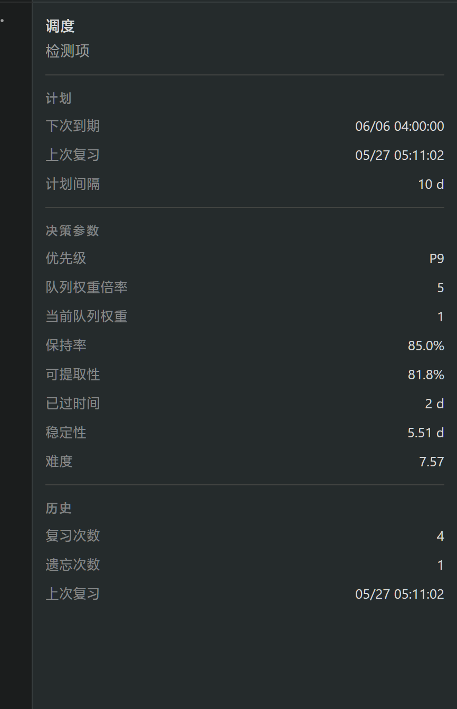

当前截图
问题参照
问题集中在右值贴边、分隔线过满、内容轨道不明确。
Foliole / Right Inspector
目标不是回到卡片，而是让 flat inspector 有内容轨道、舒适边距和稳定的信息层级。下面把当前问题和四个方向直接摆在一起。

问题集中在右值贴边、分隔线过满、内容轨道不明确。
保留 flat，内容和线一起内缩，右侧数值不再贴边。
更像工具侧栏，信息量高，但阅读舒适度弱一点。
更有数据表感，精准但可能略重。
不是卡片堆，但有轻微承载面；适合长信息组。